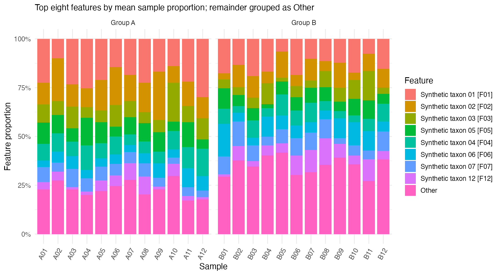
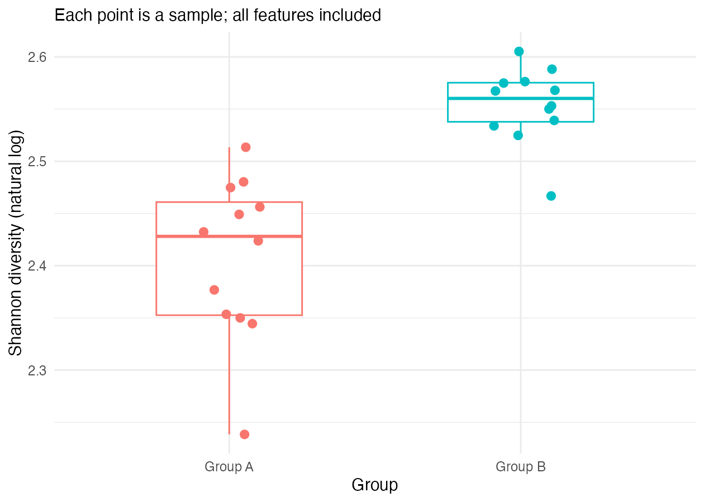

My microbiome analysis report
Worked example using synthetic data
Question
How do microbial community composition and within-sample diversity differ between Group A and Group B in this synthetic dataset?
Inputs and checks
The example contains six synthetic samples, three per group, and four fictional microbial features. Inputs are feature-counts.tsv, sample-metadata.tsv, and taxonomy.tsv in data/example/.
Each sample contains 100 feature counts. Sample identifiers match the metadata, feature identifiers match the taxonomy, counts are nonnegative integers, and the input tables contain no missing values. The validation script reports Input checks passed.
These feature totals describe the supplied table; they do not represent verified raw sequencing depth.
Methods
Input validation uses scripts/R/01-check-inputs.R. Descriptive analysis uses scripts/R/02-analyse-example.R.
Feature proportions are calculated by dividing each feature count by its sample total. Observed richness counts features with nonzero counts. Shannon diversity is calculated using natural logarithms:
\[ H = -\sum_{i:p_i>0} p_i\ln(p_i) \]
No significance tests, differential abundance tests, or causal analyses are performed.
Results

Synthetic taxon 1 accounts for 65–75% of counts in Group A. Group B has a more even composition, with each feature accounting for 20–30% of counts.

| Sample | Group | Feature total | Observed features | Shannon diversity |
|---|---|---|---|---|
| A1 | A | 100 | 3 | 0.802 |
| A2 | A | 100 | 3 | 0.857 |
| A3 | A | 100 | 3 | 0.731 |
| B1 | B | 100 | 4 | 1.376 |
| B2 | B | 100 | 4 | 1.376 |
| B3 | B | 100 | 4 | 1.376 |
In this example, Group B has higher observed richness and Shannon diversity. Its features are also more evenly distributed. The three Group B samples have the same set of counts in different feature orders, so their Shannon diversity values are equal.
Verification
For A1, counts are 70, 20, 10, and 0. The total is 100 and the proportions are 0.7, 0.2, 0.1, and 0.
\[ H_{A1} = -(0.7\ln 0.7 + 0.2\ln 0.2 + 0.1\ln 0.1) \approx 0.801819 \]
The zero-count feature contributes nothing to this sum. This value agrees with the example diversity table after rounding. Feature proportions sum to one within each sample, and all six samples appear in both figures.
When reproducing this report, compare these values with your newly generated tables and inspect the figures before accepting the interpretation.
Limitations and conclusion
This small dataset was constructed for learning. Its fictional taxa, equal sample totals, and group patterns do not represent a biological study. Equal totals alone do not establish that real-world sampling effort or data quality would be comparable.
The supplied data show that Group B has more observed features and a more even composition than Group A. These descriptive patterns do not establish statistical significance, treatment effects, causation, or community health. Higher diversity does not automatically mean a healthier community.
AI assistance
AI assisted in drafting this worked example and explaining the calculation. The stated results were checked against the supplied synthetic counts and an independently calculated Shannon value. The input-validation script was reported to pass during project setup.
The learner remains responsible for rerunning the analysis, confirming that the figures and tables agree, and writing a conclusion supported by those outputs.